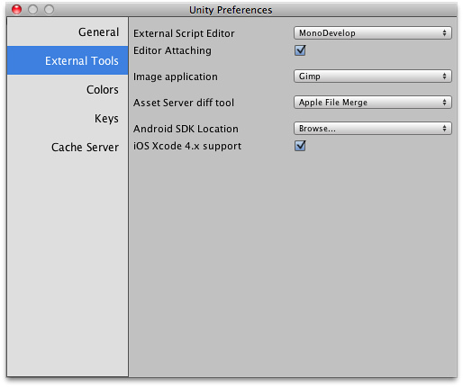
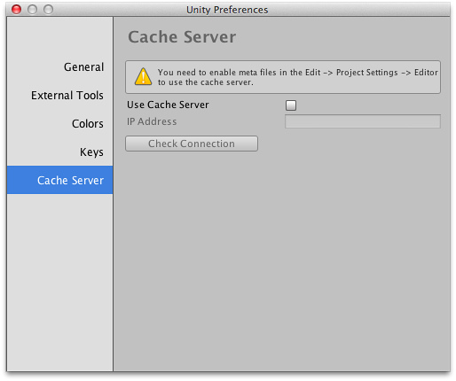

Preferences
Unity provides a number of preference panels to allow you to customise the behaviour of the editor.
General

| Auto Refresh | Should the editor update assets automatically as they change? |
| Always Show Project Wizard | Should the project wizard be shown at startup? (By default, it is shown only when the alt key is held down during launch) |
| Compress Assets On Import | Should assets be compressed automatically during import? |
| OSX Color Picker | Should the native OSX color picker be used instead of Unity's own? |
| Editor Analytics | Can the editor send information back to Unity automatically? |
| Show Asset Store search hits | Should the number of free/paid assets from the store be shown in the Project Browser? |
| Verify Saving Assets | Should Unity verify which assets to save individually on quitting? |
| Skin (Pro Only) | Which color scheme should Unity use for the editor? Pro users have the option of dark grey in addition to the default light grey. |
| Graphics Device | This is set to Automatic on the Mac but has options for Direct3D 9, Direct3D 11 and OpenGL on Windows. |
External Tools

| External Script Editor | Which application should Unity use to open script files? |
| Editor Attaching | Should Unity allow debugging to be controlled from the external script editor? |
| Image Application | Which application should Unity use to open image files? |
| Asset Server Diff Tool | Which application should Unity use to resolve file differences with the asset server? |
| Android SDK Location | Where in the filesystem is the Android SDK folder located? |
| iOS Xcode 4.x support | Should support for Xcode 4.x be enabled for iOS build targets? |
Colors

This panel allows you to choose the colors that Unity uses when displaying various user interface elements.
Keys

This panel allows you to set the keystrokes that activate the various commands in Unity.
Cache Server

| Use Cache Server | Should the cache server be enabled? |
| IP Address | IP address of the cache server, if enabled |
Page last updated: 2012-10-26